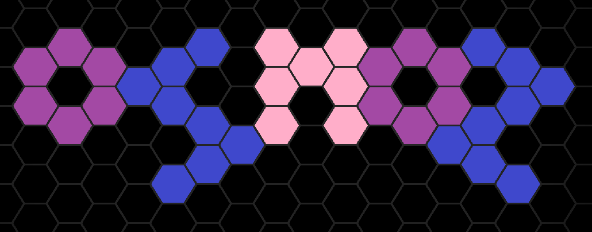
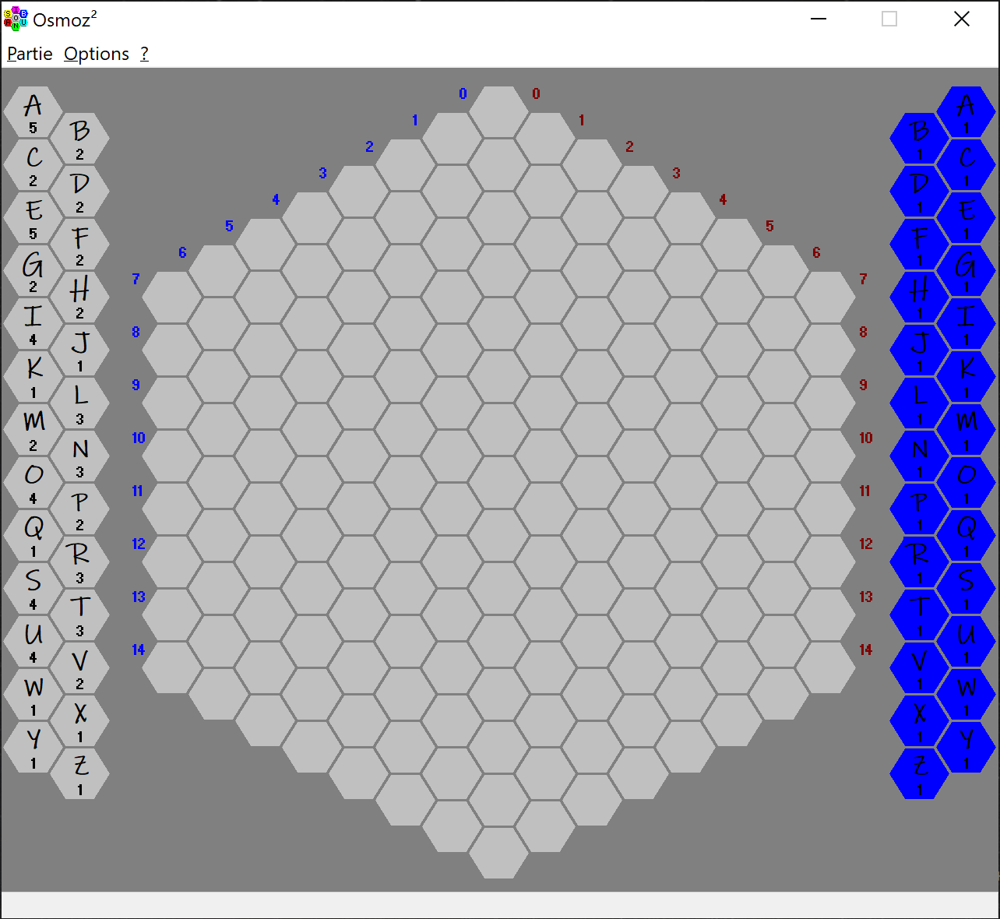
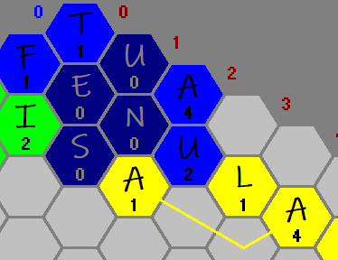
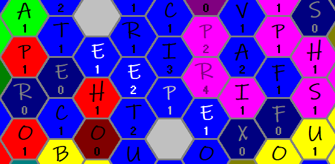
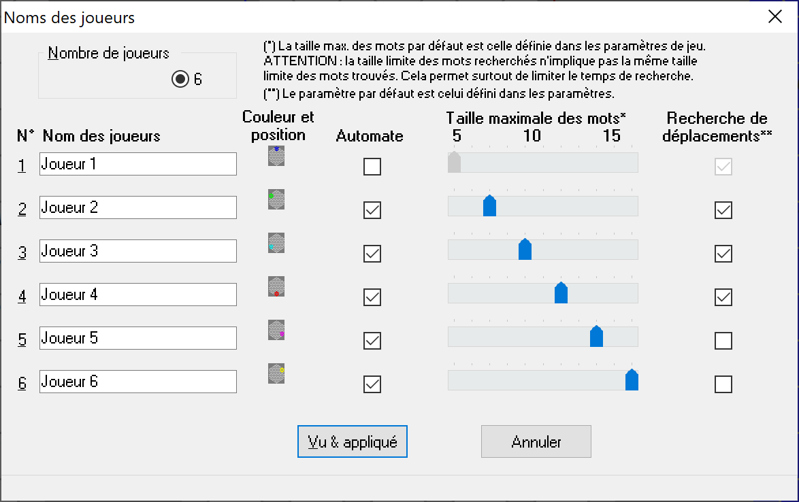
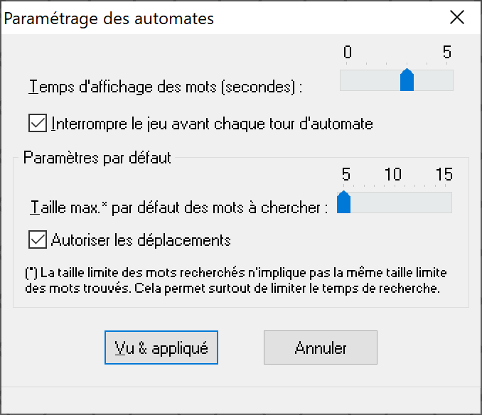

Présentation du jeu
Description du jeu
Déroulement du jeu
Lancement d'une partie
Paramétrage du jeu
Présentation du jeu
Osmoz est un amalgame de mots-mêlés et de wargame.
Le but du jeu est celui d'un wargame : s'étendre le plus possible et détruire son ou ses ennemis.
Le seul moyen d'arriver à ses fins est de former des mots de 2 à 15 lettres dans tous les sens.
Le terrain de la bataille est un hexagone composé de 169 cases hexagonales (91 cases avant la version 3.4).
Description du jeu

L'espace de jeu est composé de 3 parties :
Au milieu, il y a le plateau de jeu sur lequel on pose des lettres (une par tour de jeu).
À droite du plateau de jeu, sont affichées toutes les lettres de l'alphabet.
Ce sont les lettres dont dispose le joueur courant (son jeu).
Elles sont de la même couleur que celle du joueur sauf les lettres que le joueur ne dispose pas et qui sont en gris.
Au départ du jeu, chaque joueur dispose de toutes les lettres de l'alphabet en un seul exemplaire.
Le nombre d'exemplaires de chaque lettre dont dispose le joueur courant est inscrit sous la lettre.
À gauche du plateau de jeu, il y a également toutes les lettres de l'alphabet.
Sous chaque lettre est inscrit un nombre de points.
Celui-ci permet à un joueur de gagner une lettre supplémentaire dans son jeu.
Si une de ses lettres sur le plateau de jeu atteint ce nombre de points, il clique dessus et obtient dans son jeu un exemplaire supplémentaire de cette lettre.
Déroulement du jeu
Le jeu se joue à 2, 3 ou 6 joueurs (humains et automates).
Chaque joueur dispose au départ des 26 lettres de l'alphabet en un exemplaire.
Dans chaque tour de jeu et pour chaque joueur, il y a trois actions différentes possibles :
Le rechargement de lettres
Il récupère de nouvelles lettres en cliquant dans le plateau de jeu sur toutes les lettres de sa couleur qui ont un score supérieur ou égal à celui indiqué dans le jeu de gauche (elles sont d'apparence plus pâles et le curseur prend alors la forme +1).
Ce nombre de points est retiré du score de la lettre sur le plateau.
La pose d'une lettre
Il choisit une des lettres de son jeu (à droite) pour la poser sur le plateau de jeu (au centre).
La case du plateau de jeu doit :
- toucher une lettre de sa couleur. Le curseur prend la forme de la lettre
- permettre de former au moins un mot de 2 à 15 lettres alignées dans n'importe quel sens.
La première lettre doit être posée dans le coin imposé (voir Cases départ et Lancement d'une partie) et doit être différente des autres lettres déjà posées.
Le déplacement d'une lettre
Il choisit une des lettres sur le plateau de jeu pour la déplacer sur une case libre.
La lettre et la case doivent :
- avoir au moins un chemin de cases libres contiguës entre elles.
- permettre de former au moins un mot de 2 à 15 lettres alignées dans n'importe quel sens (après déplacement).
- être telles que le nombre minimum de cases libres contiguës entre elles doit être inférieur ou égal au score courant de la lettre.
Une fois le déplacement effectué, le score courant de la lettre déplacée, est diminué du nombre de points correspondant au nombre de cases du chemin le plus court (case libres) de la lettre à la case finale.

Dans l'exemple ci-dessus, le A jaune est déplacé de 3 cases et donc perd ses 3 points à l'arrivée (il ne lui reste plus qu'1 point).
Passer son tour
Un joueur passe son tour lorsqu'il ne pose ou ne déplace aucune lettre pendant son tour de jeu.
Attention : on considère aussi qu'un joueur qui ne fait que réapprovisionner son jeu en lettre(s) passe son tour.
Un joueur peut passer son tour, il n'est pas obligé de jouer sauf au premier tour : on est obligé de poser la première lettre.
Si un joueur ne peut pas jouer, il doit passer son tour. Un joueur n'est jamais retiré définitivement du jeu. Une case peut se libérer à tout moment.
Cases départ
À 3 joueurs, on part d'un coin sur deux.
À 2 joueurs, les coins sont opposés.
Score des lettres
Le nombre inscrit en dessous d'une lettre a trois significations suivant où elle se situe :
- Si elle se situe sur le plateau de jeu, il s'agit du score de la lettre (appartenant au joueur de la même couleur).
- Si elle se situe à droite du plateau, il s'agit de son nombre d'exemplaires dans le jeu du joueur courant.
- Si elle se situe à gauche du plateau, il s'agit du score minimal que doit avoir une lettre du plateau pour réapprovisionner le jeu de son propriétaire d'un exemplaire supplémentaire.
Décompte des mots formés
Après pose ou déplacement d'une lettre, on comptabilise chaque mot vérifiant les conditions suivantes :
- Il contient la lettre qui vient d'être posée ou déplacée.
- Les lettres formant le mot sont contiguës et alignées et ce dans n'importe quelle direction.
- Il n'est pas contenu dans un autre mot formé dans le même sens ou le sens opposé.
Exemple : le mot REMERCIER contient MERCI (REMERCIER) et CREME (REMERCIER).
Décompte des points
Lors du décompte des mots formés, à chaque fois qu'une lettre (déjà placée ou non) compose un nouveau mot, elle voit son score :
- Augmenter d'1 point s'il s'agit d'une lettre du joueur courant.
- Diminuer d'1 point s'il s'agit d'une lettre appartenant à un adversaire.
Dans le cas où la lettre a un score nul et appartient à un adversaire, elle passe alors du côté du joueur courant et son score passe à 1 point.
Le score de chaque joueur est la somme des nombres de lettres de tous les mots formés.
Autrement dit, une lettre donne autant de points que le nombre de fois qu'elle permet de former un mot.

Dans l'exemple ci-dessus, le joueur bleu pose la lettre P (en gris).
Il forme d'abord PIC ce qu'il lui donne 3 points.
Il forme ensuite EPEE (voir ci-dessus) ce qui donne 4 points supplémentaires (soit un total de 7 points).
Le score de la lettre posée (P) a donc augmenté de 2 points (2 mots formés).
Les lettres plus sombres sont les lettres ayant un nombre de points nul susceptibles d'être prises par l'adversaire.
La fin de partie
La partie s'arrête dans deux cas :
- Dès qu'il n'y a plus de case libre sur le plateau de jeu.
- Pendant un tour de jeu complet, tous les joueurs ont passé leur tour (suite à impossiblité de jouer ou non).
Le gagnant
Le gagnant est celui qui a obtenu le plus de points.
En cas d'égalité, c'est le joueur ayant le plus de lettres (de sa couleur) sur le plateau.
En cas d'égalité à nouveau, c'est le joueur ayant le plus de points sur ces lettres posées.
C'est l'ordre de jeu qui départage définitivement les joueurs en cas d'égalité parfaite.
Lancement d'une partie
Pour jouer une partie, il suffit de choisir la rubrique Nouvelle dans le menu Partie.

Ensuite choisissez le nombre de joueurs puis entrez leurs noms (humains et automates).
Pour chaque joueur cochez la case Automate si vous souhaitez qu'il soit contrôlé par l'ordinateur.
Pour les paramètres situés après les cases Automate, voir le paragraphe Paramétrage du jeu ci-après.
Dès que vous êtes prêts, appuyez sur le bouton Vu & appliqué.
La couleur des joueurs est automatique suivant le nombre et l'ordre des joueurs :
Dans une partie à 6 joueurs : bleu, vert, ciel, rouge, mauve puis jaune.
Dans une partie à 3 joueurs : bleu, vert puis ciel.
Dans une partie à 2 joueurs : bleu puis vert.
Paramétrage du jeu
Pour paramétrer le jeu, il faut aller dans le menu Options.
- Pour changer les noms et les types de joueurs, choisissez la rubrique Joueurs... (voir fenêtre ci-dessus).
- Pour changer le comportement du jeu lors du tour des automates, choisissez la rubrique Automates... (voir fenêtre ci-dessous). Attention, les paramètres par défaut agissent sur les paramètres pour chaque automate définis dans la fenêtre des joueurs (ci-dessus).
- Pour enregistrer les messages du jeu avec les parties sauvegardées (sous forme de fichiers texte), cochez l'option Enregistrer les messages.

Dernière mise à jour le 28 avril 2020.